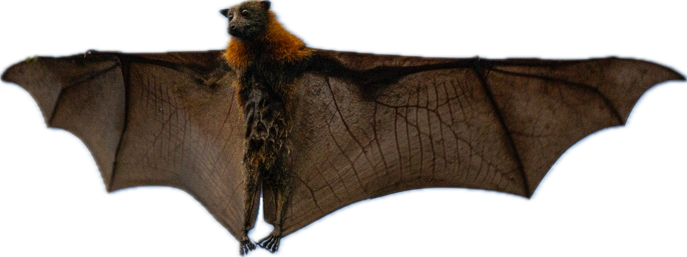
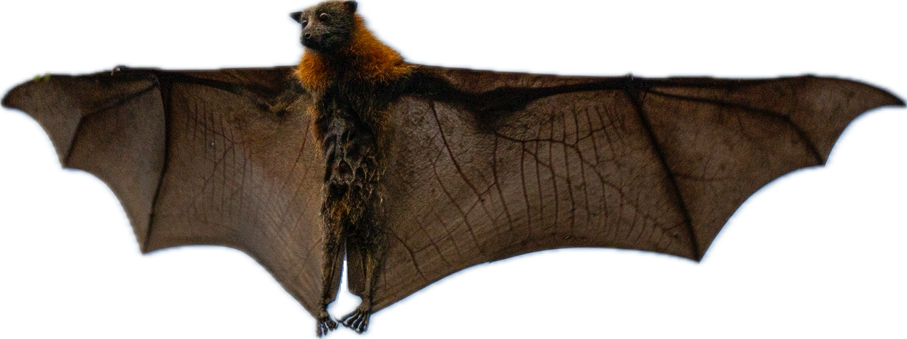
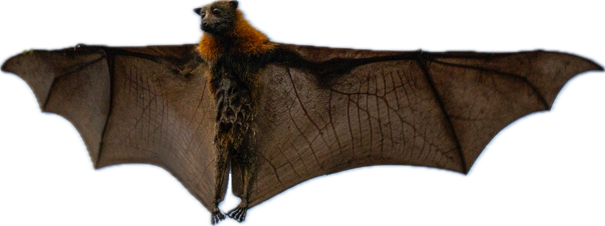

My notes from Dr. Hamilton's class. The course is divided into the following topics (also accessible using the buttons above):
Please send suggestions and corrections to:
Chirag Gokani
chiragokani [at] gmail.com
homepage

Fruit bat photographed by Stephen Blackstock at Centennial Park in Sydney, Australia, December 2023.